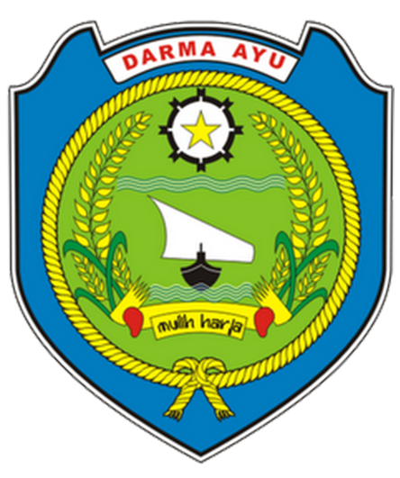
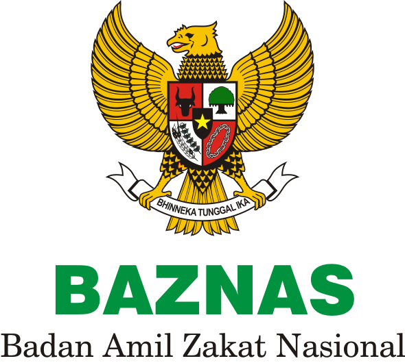

⏳ Memuat status pendaftaran...
Pendaftaran MTQ
Tahun 2026
Musabaqah Tilawatil Qur'an Kabupaten Indramayu — ajang pembinaan Al-Qur'an bagi generasi terbaik bangsa.
📅
Tanggal
15 Agustus 2026
📍
Lokasi
GOR Kab. Indramayu
📝
Pendaftaran
1–31 Juli 2026
✂️
Cutoff Usia
1 Juli 2026
↓Scroll